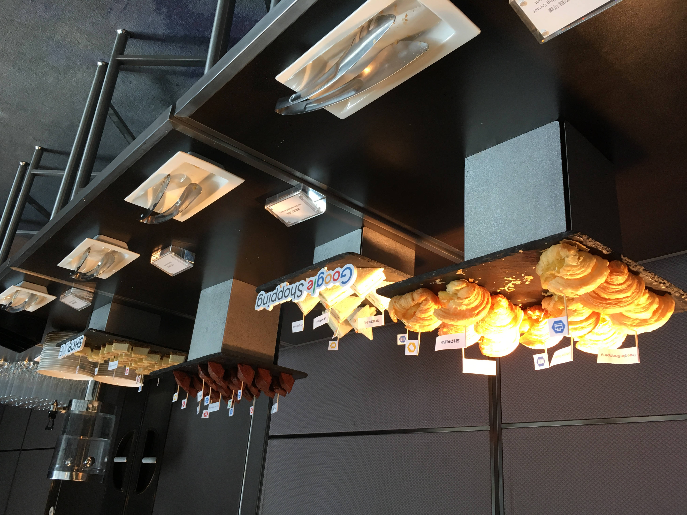
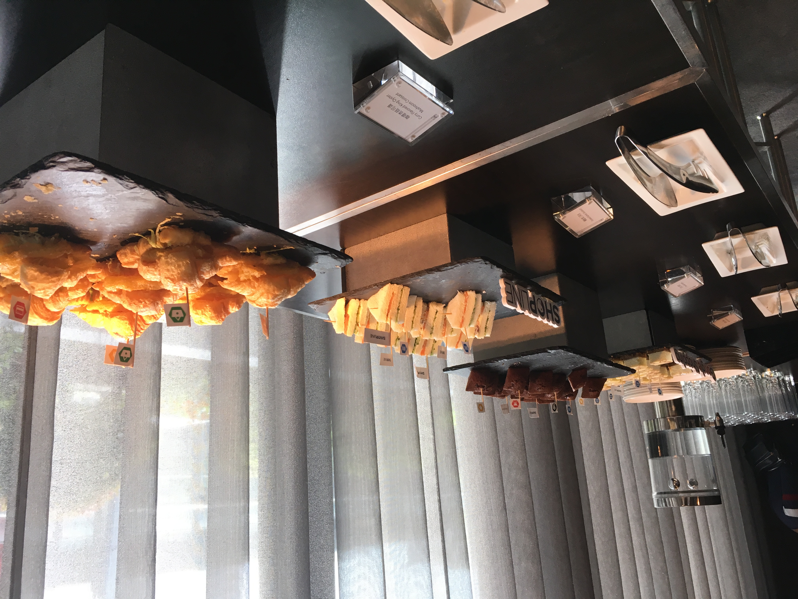
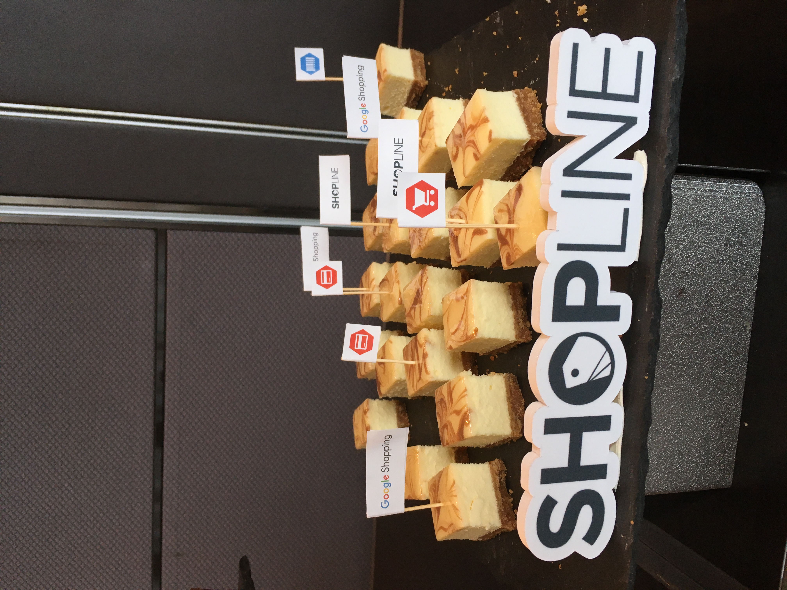
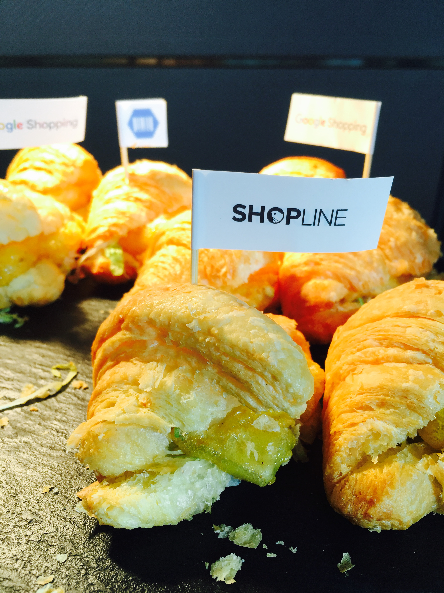

位於信義區的寒舍艾麗，是一間融合藝術、文化及生活的知名五星飯店，
酒店擁有235間客房、洋溢自然氛圍的義大利餐廳及簡約高雅的宴會廳，
為呈現細緻優雅的空間氛圍，館內匯集了國際藝術家的經典作品，
讓藝術融入空間全是，致力於打造「藝術即生活」及「生活即藝術」的品味哲學。
艾麗的LA FARFALLA義式餐廳跟THE TERRACE今天就不多加介紹
想與大家分享的是他們的活動buffet服務
這次參加shopline跟Google合辦的數位行銷開店講座
現場有提供為賓客們準備的午茶小點


首先看到的是超優秀的重乳酪蛋糕
因為我沒有帶著很大的期待吃它
一般這種buffet的小蛋糕都不好吃的
所以覺得特別意外，雖然不知道是不是因為餓了才覺得特別好吃～

可頌裡面是杏苞菇
可頌控的我，第一次吃到這樣的搭配，蠻特別的～
